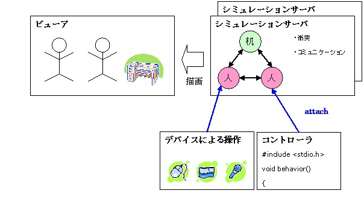

「知的エージェントによる実世界シミュレーションシステム」は、より 現実世界に近い環境を提供することを目的としたシステムです。仮想世界 におけるロボットのシミュレーションや物理シミュレーションのみならず、人や ロボットの感覚機能や、エージェント同士のコミュニケーションを実現するため のプラットフォームとなることを目指します。
本システムは、仮想世界空間を司るシミュレーションサーバと、エー ジェントの制御を行うコントローラ、仮想世界 の表示を行うビューアによって構成されます。
シミュレーションサーバ内で構成する仮想世界には、エージェント(人、ロボットなど)やエンティティ (机、りんごなど、エージェント以外の'物')を配置できます。仮想世界に おける時間をすすめることにより、エージェントや物に外力を与えたときの運動、 エージェント・エンティティ同士の衝突現象が起こります。
エージェントに対してコントローラを割り当てることにより、エージェント の行動や振舞いを制御できます。またエージェントには、高次または低次の視覚・ 聴覚機能が備わっており、周囲の状況を踏まえた行動や、エージェント間のコミュ ニケーションを実現できます。
 （株）数理システム
（株）数理システム